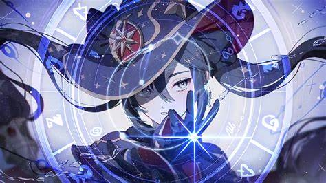

Personajes Hydro:

que podría tener conexiones con Fontaine, donde estudió bajo la tutela de su maestra, Barbeloth
A pesar de su talento, Mona siempre se encuentra al borde de la pobreza debido a su pasión por adquirir conocimientos y herramientas costosas
Cree firmemente que el destino de las personas se refleja en las estrellas y utiliza su conocimiento para hacer predicciones precisas.
Vida frugal: A pesar de su talento, Mona vive una vida austera y siempre está al límite de la pobreza.
Sin embargo, nunca se desanima y sigue buscando la verdad del universo a través de sus estudios
Mona
Mona es un personaje 5 estrella DPS, suport.
Historia
Orígenes:
Aunque Mona dice que nació en Mondstadt, después de que sus padres emigraran a Puerto Dornman, hay teorías que sugierenque podría tener conexiones con Fontaine, donde estudió bajo la tutela de su maestra, Barbeloth
Maestra y aprendizaje:
Mona fue entrenada por una astróloga poderosa y respetada, de quien aprendió técnicas avanzadas de astrología y hidromancia.A pesar de su talento, Mona siempre se encuentra al borde de la pobreza debido a su pasión por adquirir conocimientos y herramientas costosas
Personalidad:
Astróloga enigmática: Mona es conocida por su enigmática personalidad y su dedicación absoluta a la astrología.Cree firmemente que el destino de las personas se refleja en las estrellas y utiliza su conocimiento para hacer predicciones precisas.
Vida frugal: A pesar de su talento, Mona vive una vida austera y siempre está al límite de la pobreza.
Sin embargo, nunca se desanima y sigue buscando la verdad del universo a través de sus estudios